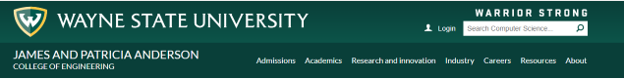
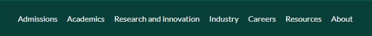
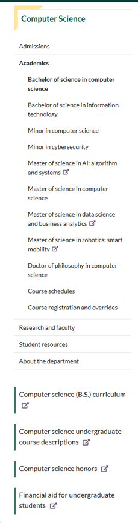
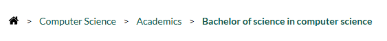
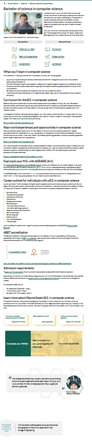
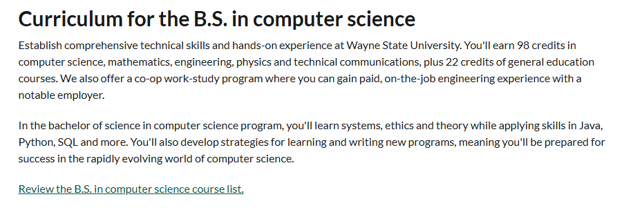
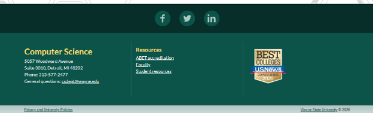
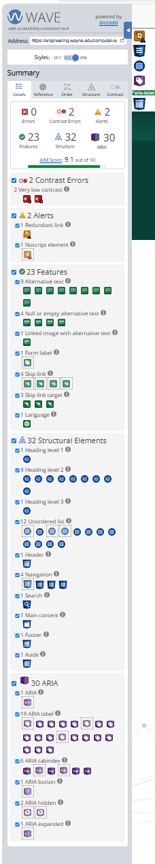
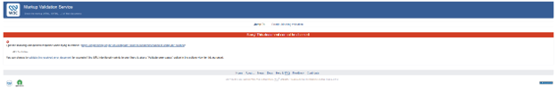

Page Selection
Bachelor of Science in Computer Science
https://engineering.wayne.edu/computer-science/academics/bachelor-computer-science
I selected the Bachelor of Science in Computer Science page from Wayne State University's College of Engineering website. This is the page of my major. This page provides detailed information about the degree program and contains a well-organized structure that is easy to analyze using HTML5 semantic elements. The page includes a header, navigation menus, main content, images, multiple headings, lists, and a footer. Because it contains all of the required structural components, it is an ideal page for evaluating web page organization, accessibility, and semantic markup.
Major Sections
Site Header

header
In this section, there is a site header that should be marked up with a <header> element because it contains the university logo, search bar, and contact information. The header provides important branding and navigation elements that are consistent across the entire website. It appears at the top of the page and serves as an introduction to the site, making it an appropriate use of the <header> semantic element.
Primary Navigation

nav
In this section, there is a primary navigation menu that should be marked up with a <nav> element because it provides the main way for users to navigate the website. It includes links to Admissions, Academics, Research and Innovation, Industry, Careers, Resources, and About. This allows users to easily access different areas of the Wayne State University website from any page.
Internal Navigation

internal-nav
In this section, there is an internal navigation menu specific to the Computer Science department. This should also be marked up with a <nav> element because it provides a secondary navigation system for users interested in computer science topics. It includes links to degree programs, minors, course schedules, research and faculty, student resources, and department information. This helps users quickly access related content within the computer science area of the website.
Links

list
In this section, there are two lists that should be marked up with <ul> elements because they group related links together. The first list is the primary navigation menu, which includes links such as Admissions, Academics, Research and Innovation, Industry, Careers, Resources, and About. The second list is the internal Computer Science navigation, which includes links to degree programs, minors, course schedules, research and faculty, student resources, and department information. Both lists are unordered because the items are not in a specific sequence or order.
Main Content

main
In this section, there is a main content area that should be marked up with a <main> element because it contains the primary information about the Bachelor of Science in Computer Science program. This includes the program description, curriculum details, career outlook, and accreditation information. The main content is the central focus of the page and provides the key information that users are seeking when they visit this page, making it an appropriate use of the <main> semantic element.
Curriculum Section

section
In this section, there is a curriculum section that should be marked up with a <section> element because it represents a distinct thematic grouping of content within the main content area. This section focuses specifically on the curriculum for the Bachelor of Science in Computer Science program, providing detailed information about degree requirements, course descriptions, and academic policies. Using a <section> element helps to logically organize the content and allows users to easily identify and navigate to this specific topic within the larger main content area.
Page Footer

footer
In this section, there is a page footer that should be marked up with a <footer> element because it contains information that typically appears at the bottom of a webpage, such as copyright information, contact details, and additional links. The footer provides closure to the page and often includes important information that users may need after reading the main content. It is a common convention to use the <footer> semantic element for this type of content, making it an appropriate choice for this section of the page.
Heading Hierarchy
The page uses multiple heading levels to organize the content clearly. The page title is the main heading, while topics like curriculum, career outlook, and accreditation are lower-level headings. This helps users scan the page and understand how the information is organized.
- Bachelor of Science in Computer Science — H1. This is the main topic of the page.
- Curriculum for the B.S. in Computer Science — H2. This starts a major section about degree requirements.
- Career outlook for individuals with a B.S. in computer science — H2. This starts another major content section.
- ABET accreditation — H3. This supports the larger academic/program information section.
Lists
Primary Navigation List
The primary navigation menu includes links such as Admissions, Academics, Research and Innovation, Industry, Careers, Resources, and About. This should be marked up as an unordered list using <ul> because the items are navigation choices, not steps in a required order. The list items are links.
Internal Navigation List
The internal Computer Science navigation includes links to degree programs, minors, course schedules, research and faculty, student resources, and department information. This should also be marked up as an unordered list using <ul> because the links are grouped by topic but are not numbered instructions. The list items are links.
Link Analysis
Internal Links
- Admissions
- Academics
- Course schedules
External Links
- Computer science B.S. curriculum
- Computer science undergraduate course descriptions
- ABET accreditation
Internal links keep users within the Wayne State University website or related Wayne State pages. External links take users to a different website, document, or outside resource. I would expect external links to open in a new tab using target="_blank" so users do not lose their place on the program page. The page uses an external-link icon to visually show when a link may leave the current page or open an outside resource.
Accessibility Review
View WAVE accessibility results for the Bachelor of Science in Computer Science page
This is the WAVE accessibility report for the Bachelor of Science in Computer Science page. The WAVE tool reported 0 errors, 2 contrast errors, and 2 alerts. One significant accessibility issue was a redundant link that goes to the same URL. Another issue was a noscript element being present. A specific improvement would be to fix the redundant link.
HTML Validation
View W3C HTML validation results for the Bachelor of Science in Computer Science page
The W3C HTML Validator was unable to validate the selected webpage because the Wayne State University server returned a 403 Forbidden response. This prevented the validator from accessing the page source and performing a full validation check. The issue appears to be caused by server access restrictions rather than HTML errors on the page itself. A possible improvement would be to allow validation services access to public webpages so developers can verify compliance with W3C standards.
Summary
Overall, the Bachelor of Science in Computer Science page is well organized and demonstrates effective use of web page structure. The page contains a clear header, navigation menus, main content area, multiple headings, lists, images, and a footer. There was a part that I did not know if it qualifies as a table and have chosen to not include it because I did not know if it would be incorrectly categorized. The rest of the elements within this page make the information easy to locate and understand. The heading hierarchy and navigation systems help users move through the page efficiently. Any accessibility or validation issues discovered during testing could be improved, but the overall structure of the page follows modern web design practices and provides a positive user experience.